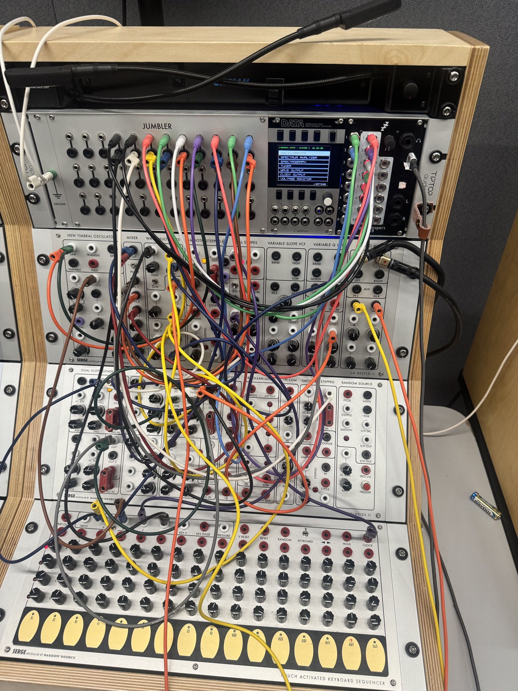
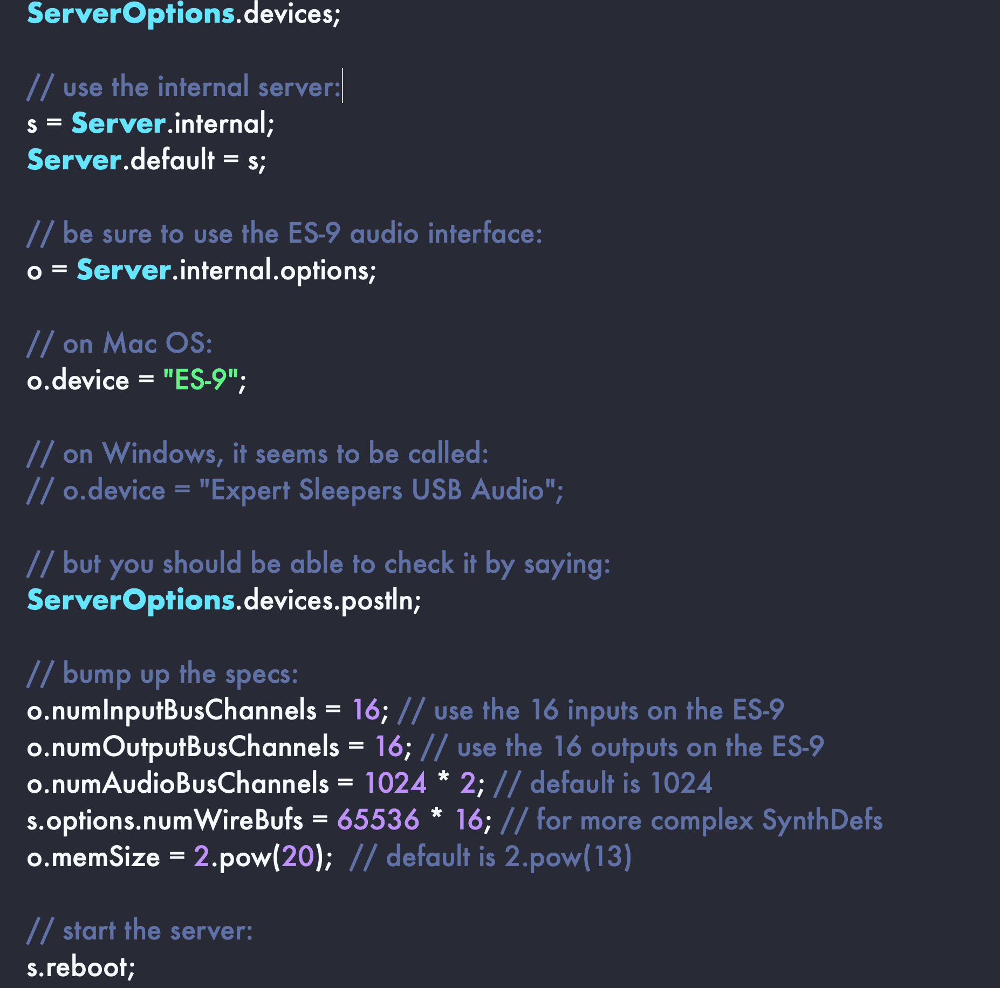
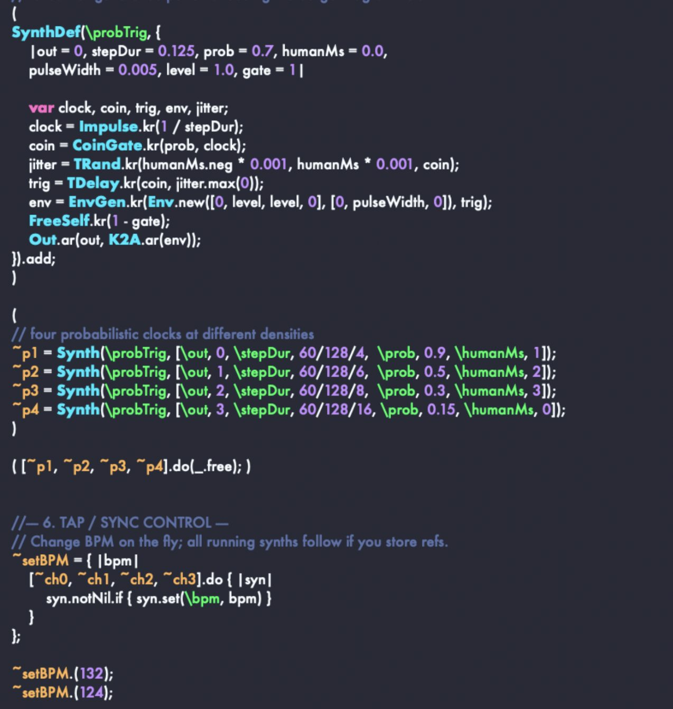
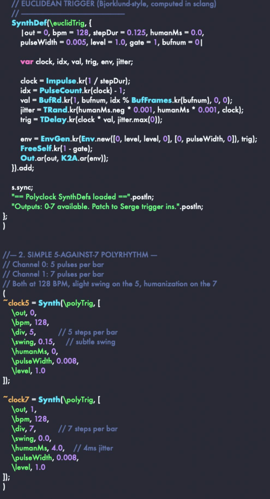
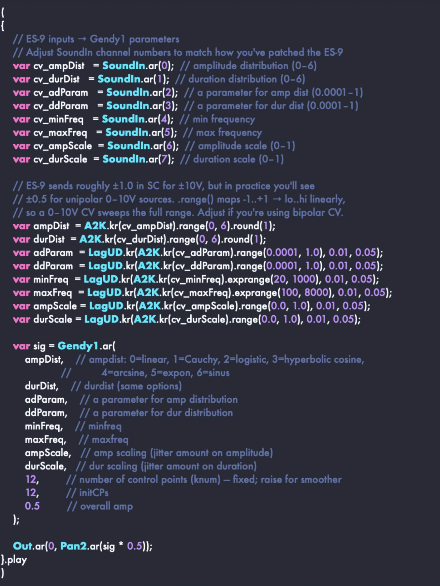
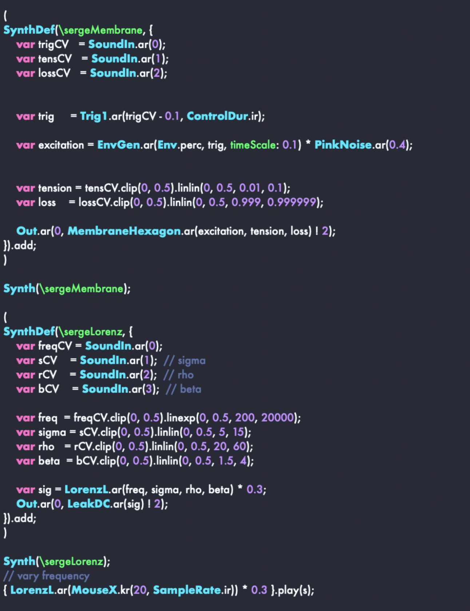

Sound pieces for SuperCollider & Serge Modular — 2025–26
Selected Sound Works
| Years | 2025–2026 |
|---|---|
| Studio | RISD SRST |
| Systems | SuperCollider, Serge Modular Synthesizer |
| Interface | Expert Sleepers ES-9 |
| Running time | 32:18 across five pieces |
| Listen | Full pieces on Bandcamp, as EDNZ |
Hear all five in full on Bandcamp Released as EDNZ, August 2026
A body of recorded sound work made in the RISD SRST studio with SuperCollider and the Serge Modular Synthesizer in a method where code and analog hardware are placed in mutual control. It started with exploration within SuperCollider and learning its language to create algorithmic processes that steer the analog system’s voltage as well as having the Serge’s output return as data that interacts with running code. The sound pieces that arrive is a composition constantly in negotiation.
The pieces are built in ways similar to how I approach paintings. Sounds are treated as materials to be layered, reconfigured and constantly thinking about density and interference. It is meant to be experimental and non-linear. A patch here functions more like a graphic score. It offers a set of rules that cannot predict itself. My own intervention became the key to its ever evolving nature. Think of these pieces as documentations of systems simply behaving. The two systems meet through an Expert Sleepers ES-9.





